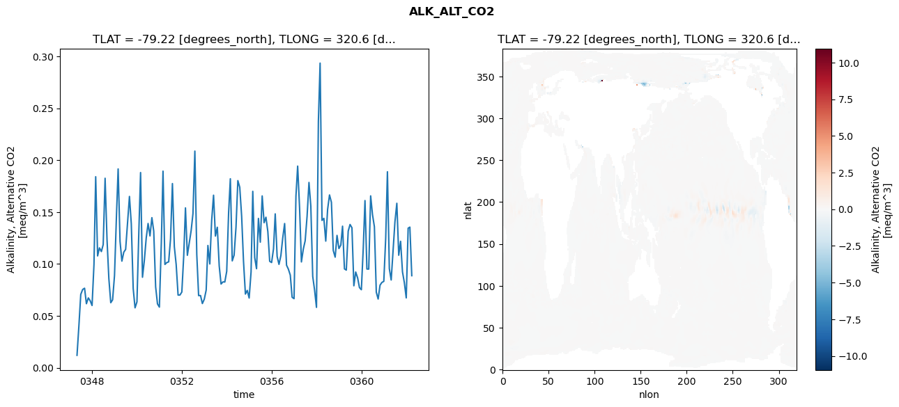
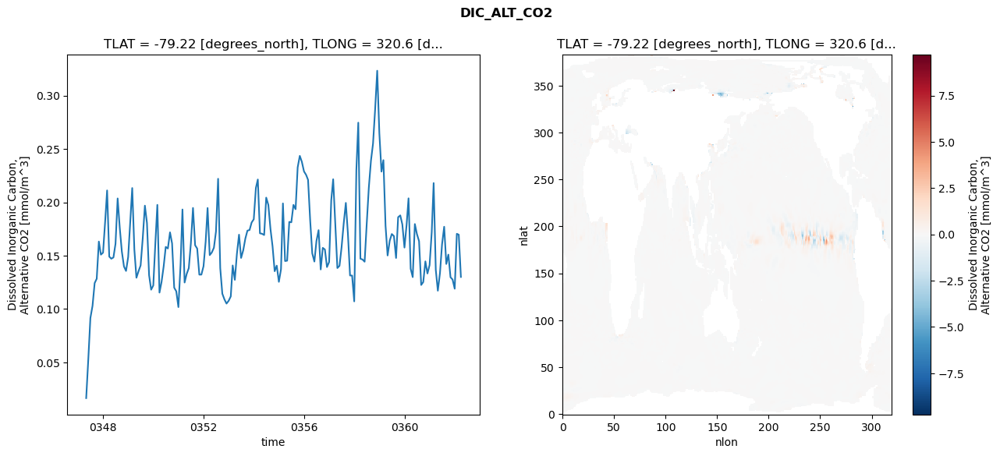
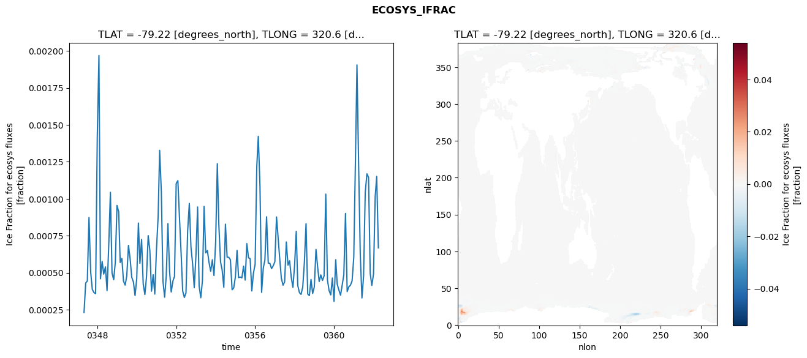
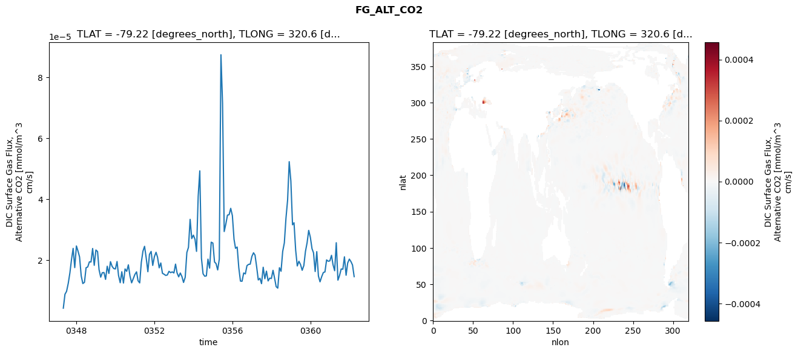

glb-dor_North_Atlantic_basin_011_1999-04-01_00045#
Simulation details#
Case: smyle.cdr-atlas-v0.glb-dor_North_Atlantic_basin_011_1999-04-01_00045.001
Basin: North_Atlantic_basin
Polygon: 11.0
Start date: 1999-04
Show code cell source Hide code cell source
import xarray as xr
import matplotlib.pyplot as plt
Show code cell source Hide code cell source
zarr_store = "/path/to/zarr/store"
# Parameters
zarr_store = "/global/cfs/projectdirs/m4746/Projects/Ocean-CDR-Atlas-v0/data/validation/smyle.cdr-atlas-v0.glb-dor_North_Atlantic_basin_011_1999-04-01_00045.001.validation.zarr"
Show code cell source Hide code cell source
%%time
ds_o = xr.open_zarr(zarr_store).compute()
ds_o
CPU times: user 627 ms, sys: 509 ms, total: 1.14 s
Wall time: 1.37 s
<xarray.Dataset> Size: 2MB
Dimensions: (nlat: 384, nlon: 320, time: 180)
Coordinates:
TLAT float64 8B -79.22
TLONG float64 8B 320.6
ULAT float64 8B -78.95
ULONG float64 8B 321.1
* time (time) object 1kB 0347-05-01 00:00:00 ... 0362-04-01 0...
z_t float32 4B 500.0
Dimensions without coordinates: nlat, nlon
Data variables:
ALK_ALT_CO2_diff (nlat, nlon) float32 492kB nan nan nan ... nan nan nan
ALK_ALT_CO2_rmse (time) float64 1kB 0.01202 0.04062 ... 0.1355 0.0887
DIC_ALT_CO2_diff (nlat, nlon) float32 492kB nan nan nan ... nan nan nan
DIC_ALT_CO2_rmse (time) float64 1kB 0.01656 0.05342 ... 0.1697 0.1301
ECOSYS_IFRAC_diff (nlat, nlon) float32 492kB nan nan nan ... nan nan nan
ECOSYS_IFRAC_rmse (time) float64 1kB 0.0002302 0.0004304 ... 0.0006673
FG_ALT_CO2_diff (nlat, nlon) float32 492kB nan nan nan ... nan nan nan
FG_ALT_CO2_rmse (time) float64 1kB 4.179e-06 8.759e-06 ... 1.454e-05xarray.Dataset
- nlat: 384
- nlon: 320
- time: 180
- TLAT()float64-79.22
- long_name :
- array of t-grid latitudes
- units :
- degrees_north
array(-79.22052261)
- TLONG()float64320.6
- long_name :
- array of t-grid longitudes
- units :
- degrees_east
array(320.56250892)
- ULAT()float64-78.95
- long_name :
- array of u-grid latitudes
- units :
- degrees_north
array(-78.95289509)
- ULONG()float64321.1
- long_name :
- array of u-grid longitudes
- units :
- degrees_east
array(321.12500894)
- time(time)object0347-05-01 00:00:00 ... 0362-04-...
- bounds :
- time_bound
- long_name :
- time
array([cftime.DatetimeNoLeap(347, 5, 1, 0, 0, 0, 0, has_year_zero=True), cftime.DatetimeNoLeap(347, 6, 1, 0, 0, 0, 0, has_year_zero=True), cftime.DatetimeNoLeap(347, 7, 1, 0, 0, 0, 0, has_year_zero=True), cftime.DatetimeNoLeap(347, 8, 1, 0, 0, 0, 0, has_year_zero=True), cftime.DatetimeNoLeap(347, 9, 1, 0, 0, 0, 0, has_year_zero=True), cftime.DatetimeNoLeap(347, 10, 1, 0, 0, 0, 0, has_year_zero=True), cftime.DatetimeNoLeap(347, 11, 1, 0, 0, 0, 0, has_year_zero=True), cftime.DatetimeNoLeap(347, 12, 1, 0, 0, 0, 0, has_year_zero=True), cftime.DatetimeNoLeap(348, 1, 1, 0, 0, 0, 0, has_year_zero=True), cftime.DatetimeNoLeap(348, 2, 1, 0, 0, 0, 0, has_year_zero=True), cftime.DatetimeNoLeap(348, 3, 1, 0, 0, 0, 0, has_year_zero=True), cftime.DatetimeNoLeap(348, 4, 1, 0, 0, 0, 0, has_year_zero=True), cftime.DatetimeNoLeap(348, 5, 1, 0, 0, 0, 0, has_year_zero=True), cftime.DatetimeNoLeap(348, 6, 1, 0, 0, 0, 0, has_year_zero=True), cftime.DatetimeNoLeap(348, 7, 1, 0, 0, 0, 0, has_year_zero=True), cftime.DatetimeNoLeap(348, 8, 1, 0, 0, 0, 0, has_year_zero=True), cftime.DatetimeNoLeap(348, 9, 1, 0, 0, 0, 0, has_year_zero=True), cftime.DatetimeNoLeap(348, 10, 1, 0, 0, 0, 0, has_year_zero=True), cftime.DatetimeNoLeap(348, 11, 1, 0, 0, 0, 0, has_year_zero=True), cftime.DatetimeNoLeap(348, 12, 1, 0, 0, 0, 0, has_year_zero=True), cftime.DatetimeNoLeap(349, 1, 1, 0, 0, 0, 0, has_year_zero=True), cftime.DatetimeNoLeap(349, 2, 1, 0, 0, 0, 0, has_year_zero=True), cftime.DatetimeNoLeap(349, 3, 1, 0, 0, 0, 0, has_year_zero=True), cftime.DatetimeNoLeap(349, 4, 1, 0, 0, 0, 0, has_year_zero=True), cftime.DatetimeNoLeap(349, 5, 1, 0, 0, 0, 0, has_year_zero=True), cftime.DatetimeNoLeap(349, 6, 1, 0, 0, 0, 0, has_year_zero=True), cftime.DatetimeNoLeap(349, 7, 1, 0, 0, 0, 0, has_year_zero=True), cftime.DatetimeNoLeap(349, 8, 1, 0, 0, 0, 0, has_year_zero=True), cftime.DatetimeNoLeap(349, 9, 1, 0, 0, 0, 0, has_year_zero=True), cftime.DatetimeNoLeap(349, 10, 1, 0, 0, 0, 0, has_year_zero=True), cftime.DatetimeNoLeap(349, 11, 1, 0, 0, 0, 0, has_year_zero=True), cftime.DatetimeNoLeap(349, 12, 1, 0, 0, 0, 0, has_year_zero=True), cftime.DatetimeNoLeap(350, 1, 1, 0, 0, 0, 0, has_year_zero=True), cftime.DatetimeNoLeap(350, 2, 1, 0, 0, 0, 0, has_year_zero=True), cftime.DatetimeNoLeap(350, 3, 1, 0, 0, 0, 0, has_year_zero=True), cftime.DatetimeNoLeap(350, 4, 1, 0, 0, 0, 0, has_year_zero=True), cftime.DatetimeNoLeap(350, 5, 1, 0, 0, 0, 0, has_year_zero=True), cftime.DatetimeNoLeap(350, 6, 1, 0, 0, 0, 0, has_year_zero=True), cftime.DatetimeNoLeap(350, 7, 1, 0, 0, 0, 0, has_year_zero=True), cftime.DatetimeNoLeap(350, 8, 1, 0, 0, 0, 0, has_year_zero=True), cftime.DatetimeNoLeap(350, 9, 1, 0, 0, 0, 0, has_year_zero=True), cftime.DatetimeNoLeap(350, 10, 1, 0, 0, 0, 0, has_year_zero=True), cftime.DatetimeNoLeap(350, 11, 1, 0, 0, 0, 0, has_year_zero=True), cftime.DatetimeNoLeap(350, 12, 1, 0, 0, 0, 0, has_year_zero=True), cftime.DatetimeNoLeap(351, 1, 1, 0, 0, 0, 0, has_year_zero=True), cftime.DatetimeNoLeap(351, 2, 1, 0, 0, 0, 0, has_year_zero=True), cftime.DatetimeNoLeap(351, 3, 1, 0, 0, 0, 0, has_year_zero=True), cftime.DatetimeNoLeap(351, 4, 1, 0, 0, 0, 0, has_year_zero=True), cftime.DatetimeNoLeap(351, 5, 1, 0, 0, 0, 0, has_year_zero=True), cftime.DatetimeNoLeap(351, 6, 1, 0, 0, 0, 0, has_year_zero=True), cftime.DatetimeNoLeap(351, 7, 1, 0, 0, 0, 0, has_year_zero=True), cftime.DatetimeNoLeap(351, 8, 1, 0, 0, 0, 0, has_year_zero=True), cftime.DatetimeNoLeap(351, 9, 1, 0, 0, 0, 0, has_year_zero=True), cftime.DatetimeNoLeap(351, 10, 1, 0, 0, 0, 0, has_year_zero=True), cftime.DatetimeNoLeap(351, 11, 1, 0, 0, 0, 0, has_year_zero=True), cftime.DatetimeNoLeap(351, 12, 1, 0, 0, 0, 0, has_year_zero=True), cftime.DatetimeNoLeap(352, 1, 1, 0, 0, 0, 0, has_year_zero=True), cftime.DatetimeNoLeap(352, 2, 1, 0, 0, 0, 0, has_year_zero=True), cftime.DatetimeNoLeap(352, 3, 1, 0, 0, 0, 0, has_year_zero=True), cftime.DatetimeNoLeap(352, 4, 1, 0, 0, 0, 0, has_year_zero=True), cftime.DatetimeNoLeap(352, 5, 1, 0, 0, 0, 0, has_year_zero=True), cftime.DatetimeNoLeap(352, 6, 1, 0, 0, 0, 0, has_year_zero=True), cftime.DatetimeNoLeap(352, 7, 1, 0, 0, 0, 0, has_year_zero=True), cftime.DatetimeNoLeap(352, 8, 1, 0, 0, 0, 0, has_year_zero=True), cftime.DatetimeNoLeap(352, 9, 1, 0, 0, 0, 0, has_year_zero=True), cftime.DatetimeNoLeap(352, 10, 1, 0, 0, 0, 0, has_year_zero=True), cftime.DatetimeNoLeap(352, 11, 1, 0, 0, 0, 0, has_year_zero=True), cftime.DatetimeNoLeap(352, 12, 1, 0, 0, 0, 0, has_year_zero=True), cftime.DatetimeNoLeap(353, 1, 1, 0, 0, 0, 0, has_year_zero=True), cftime.DatetimeNoLeap(353, 2, 1, 0, 0, 0, 0, has_year_zero=True), cftime.DatetimeNoLeap(353, 3, 1, 0, 0, 0, 0, has_year_zero=True), cftime.DatetimeNoLeap(353, 4, 1, 0, 0, 0, 0, has_year_zero=True), cftime.DatetimeNoLeap(353, 5, 1, 0, 0, 0, 0, has_year_zero=True), cftime.DatetimeNoLeap(353, 6, 1, 0, 0, 0, 0, has_year_zero=True), cftime.DatetimeNoLeap(353, 7, 1, 0, 0, 0, 0, has_year_zero=True), cftime.DatetimeNoLeap(353, 8, 1, 0, 0, 0, 0, has_year_zero=True), cftime.DatetimeNoLeap(353, 9, 1, 0, 0, 0, 0, has_year_zero=True), cftime.DatetimeNoLeap(353, 10, 1, 0, 0, 0, 0, has_year_zero=True), cftime.DatetimeNoLeap(353, 11, 1, 0, 0, 0, 0, has_year_zero=True), cftime.DatetimeNoLeap(353, 12, 1, 0, 0, 0, 0, has_year_zero=True), cftime.DatetimeNoLeap(354, 1, 1, 0, 0, 0, 0, has_year_zero=True), cftime.DatetimeNoLeap(354, 2, 1, 0, 0, 0, 0, has_year_zero=True), cftime.DatetimeNoLeap(354, 3, 1, 0, 0, 0, 0, has_year_zero=True), cftime.DatetimeNoLeap(354, 4, 1, 0, 0, 0, 0, has_year_zero=True), cftime.DatetimeNoLeap(354, 5, 1, 0, 0, 0, 0, has_year_zero=True), cftime.DatetimeNoLeap(354, 6, 1, 0, 0, 0, 0, has_year_zero=True), cftime.DatetimeNoLeap(354, 7, 1, 0, 0, 0, 0, has_year_zero=True), cftime.DatetimeNoLeap(354, 8, 1, 0, 0, 0, 0, has_year_zero=True), cftime.DatetimeNoLeap(354, 9, 1, 0, 0, 0, 0, has_year_zero=True), cftime.DatetimeNoLeap(354, 10, 1, 0, 0, 0, 0, has_year_zero=True), cftime.DatetimeNoLeap(354, 11, 1, 0, 0, 0, 0, has_year_zero=True), cftime.DatetimeNoLeap(354, 12, 1, 0, 0, 0, 0, has_year_zero=True), cftime.DatetimeNoLeap(355, 1, 1, 0, 0, 0, 0, has_year_zero=True), cftime.DatetimeNoLeap(355, 2, 1, 0, 0, 0, 0, has_year_zero=True), cftime.DatetimeNoLeap(355, 3, 1, 0, 0, 0, 0, has_year_zero=True), cftime.DatetimeNoLeap(355, 4, 1, 0, 0, 0, 0, has_year_zero=True), cftime.DatetimeNoLeap(355, 5, 1, 0, 0, 0, 0, has_year_zero=True), cftime.DatetimeNoLeap(355, 6, 1, 0, 0, 0, 0, has_year_zero=True), cftime.DatetimeNoLeap(355, 7, 1, 0, 0, 0, 0, has_year_zero=True), cftime.DatetimeNoLeap(355, 8, 1, 0, 0, 0, 0, has_year_zero=True), cftime.DatetimeNoLeap(355, 9, 1, 0, 0, 0, 0, has_year_zero=True), cftime.DatetimeNoLeap(355, 10, 1, 0, 0, 0, 0, has_year_zero=True), cftime.DatetimeNoLeap(355, 11, 1, 0, 0, 0, 0, has_year_zero=True), cftime.DatetimeNoLeap(355, 12, 1, 0, 0, 0, 0, has_year_zero=True), cftime.DatetimeNoLeap(356, 1, 1, 0, 0, 0, 0, has_year_zero=True), cftime.DatetimeNoLeap(356, 2, 1, 0, 0, 0, 0, has_year_zero=True), cftime.DatetimeNoLeap(356, 3, 1, 0, 0, 0, 0, has_year_zero=True), cftime.DatetimeNoLeap(356, 4, 1, 0, 0, 0, 0, has_year_zero=True), cftime.DatetimeNoLeap(356, 5, 1, 0, 0, 0, 0, has_year_zero=True), cftime.DatetimeNoLeap(356, 6, 1, 0, 0, 0, 0, has_year_zero=True), cftime.DatetimeNoLeap(356, 7, 1, 0, 0, 0, 0, has_year_zero=True), cftime.DatetimeNoLeap(356, 8, 1, 0, 0, 0, 0, has_year_zero=True), cftime.DatetimeNoLeap(356, 9, 1, 0, 0, 0, 0, has_year_zero=True), cftime.DatetimeNoLeap(356, 10, 1, 0, 0, 0, 0, has_year_zero=True), cftime.DatetimeNoLeap(356, 11, 1, 0, 0, 0, 0, has_year_zero=True), cftime.DatetimeNoLeap(356, 12, 1, 0, 0, 0, 0, has_year_zero=True), cftime.DatetimeNoLeap(357, 1, 1, 0, 0, 0, 0, has_year_zero=True), cftime.DatetimeNoLeap(357, 2, 1, 0, 0, 0, 0, has_year_zero=True), cftime.DatetimeNoLeap(357, 3, 1, 0, 0, 0, 0, has_year_zero=True), cftime.DatetimeNoLeap(357, 4, 1, 0, 0, 0, 0, has_year_zero=True), cftime.DatetimeNoLeap(357, 5, 1, 0, 0, 0, 0, has_year_zero=True), cftime.DatetimeNoLeap(357, 6, 1, 0, 0, 0, 0, has_year_zero=True), cftime.DatetimeNoLeap(357, 7, 1, 0, 0, 0, 0, has_year_zero=True), cftime.DatetimeNoLeap(357, 8, 1, 0, 0, 0, 0, has_year_zero=True), cftime.DatetimeNoLeap(357, 9, 1, 0, 0, 0, 0, has_year_zero=True), cftime.DatetimeNoLeap(357, 10, 1, 0, 0, 0, 0, has_year_zero=True), cftime.DatetimeNoLeap(357, 11, 1, 0, 0, 0, 0, has_year_zero=True), cftime.DatetimeNoLeap(357, 12, 1, 0, 0, 0, 0, has_year_zero=True), cftime.DatetimeNoLeap(358, 1, 1, 0, 0, 0, 0, has_year_zero=True), cftime.DatetimeNoLeap(358, 2, 1, 0, 0, 0, 0, has_year_zero=True), cftime.DatetimeNoLeap(358, 3, 1, 0, 0, 0, 0, has_year_zero=True), cftime.DatetimeNoLeap(358, 4, 1, 0, 0, 0, 0, has_year_zero=True), cftime.DatetimeNoLeap(358, 5, 1, 0, 0, 0, 0, has_year_zero=True), cftime.DatetimeNoLeap(358, 6, 1, 0, 0, 0, 0, has_year_zero=True), cftime.DatetimeNoLeap(358, 7, 1, 0, 0, 0, 0, has_year_zero=True), cftime.DatetimeNoLeap(358, 8, 1, 0, 0, 0, 0, has_year_zero=True), cftime.DatetimeNoLeap(358, 9, 1, 0, 0, 0, 0, has_year_zero=True), cftime.DatetimeNoLeap(358, 10, 1, 0, 0, 0, 0, has_year_zero=True), cftime.DatetimeNoLeap(358, 11, 1, 0, 0, 0, 0, has_year_zero=True), cftime.DatetimeNoLeap(358, 12, 1, 0, 0, 0, 0, has_year_zero=True), cftime.DatetimeNoLeap(359, 1, 1, 0, 0, 0, 0, has_year_zero=True), cftime.DatetimeNoLeap(359, 2, 1, 0, 0, 0, 0, has_year_zero=True), cftime.DatetimeNoLeap(359, 3, 1, 0, 0, 0, 0, has_year_zero=True), cftime.DatetimeNoLeap(359, 4, 1, 0, 0, 0, 0, has_year_zero=True), cftime.DatetimeNoLeap(359, 5, 1, 0, 0, 0, 0, has_year_zero=True), cftime.DatetimeNoLeap(359, 6, 1, 0, 0, 0, 0, has_year_zero=True), cftime.DatetimeNoLeap(359, 7, 1, 0, 0, 0, 0, has_year_zero=True), cftime.DatetimeNoLeap(359, 8, 1, 0, 0, 0, 0, has_year_zero=True), cftime.DatetimeNoLeap(359, 9, 1, 0, 0, 0, 0, has_year_zero=True), cftime.DatetimeNoLeap(359, 10, 1, 0, 0, 0, 0, has_year_zero=True), cftime.DatetimeNoLeap(359, 11, 1, 0, 0, 0, 0, has_year_zero=True), cftime.DatetimeNoLeap(359, 12, 1, 0, 0, 0, 0, has_year_zero=True), cftime.DatetimeNoLeap(360, 1, 1, 0, 0, 0, 0, has_year_zero=True), cftime.DatetimeNoLeap(360, 2, 1, 0, 0, 0, 0, has_year_zero=True), cftime.DatetimeNoLeap(360, 3, 1, 0, 0, 0, 0, has_year_zero=True), cftime.DatetimeNoLeap(360, 4, 1, 0, 0, 0, 0, has_year_zero=True), cftime.DatetimeNoLeap(360, 5, 1, 0, 0, 0, 0, has_year_zero=True), cftime.DatetimeNoLeap(360, 6, 1, 0, 0, 0, 0, has_year_zero=True), cftime.DatetimeNoLeap(360, 7, 1, 0, 0, 0, 0, has_year_zero=True), cftime.DatetimeNoLeap(360, 8, 1, 0, 0, 0, 0, has_year_zero=True), cftime.DatetimeNoLeap(360, 9, 1, 0, 0, 0, 0, has_year_zero=True), cftime.DatetimeNoLeap(360, 10, 1, 0, 0, 0, 0, has_year_zero=True), cftime.DatetimeNoLeap(360, 11, 1, 0, 0, 0, 0, has_year_zero=True), cftime.DatetimeNoLeap(360, 12, 1, 0, 0, 0, 0, has_year_zero=True), cftime.DatetimeNoLeap(361, 1, 1, 0, 0, 0, 0, has_year_zero=True), cftime.DatetimeNoLeap(361, 2, 1, 0, 0, 0, 0, has_year_zero=True), cftime.DatetimeNoLeap(361, 3, 1, 0, 0, 0, 0, has_year_zero=True), cftime.DatetimeNoLeap(361, 4, 1, 0, 0, 0, 0, has_year_zero=True), cftime.DatetimeNoLeap(361, 5, 1, 0, 0, 0, 0, has_year_zero=True), cftime.DatetimeNoLeap(361, 6, 1, 0, 0, 0, 0, has_year_zero=True), cftime.DatetimeNoLeap(361, 7, 1, 0, 0, 0, 0, has_year_zero=True), cftime.DatetimeNoLeap(361, 8, 1, 0, 0, 0, 0, has_year_zero=True), cftime.DatetimeNoLeap(361, 9, 1, 0, 0, 0, 0, has_year_zero=True), cftime.DatetimeNoLeap(361, 10, 1, 0, 0, 0, 0, has_year_zero=True), cftime.DatetimeNoLeap(361, 11, 1, 0, 0, 0, 0, has_year_zero=True), cftime.DatetimeNoLeap(361, 12, 1, 0, 0, 0, 0, has_year_zero=True), cftime.DatetimeNoLeap(362, 1, 1, 0, 0, 0, 0, has_year_zero=True), cftime.DatetimeNoLeap(362, 2, 1, 0, 0, 0, 0, has_year_zero=True), cftime.DatetimeNoLeap(362, 3, 1, 0, 0, 0, 0, has_year_zero=True), cftime.DatetimeNoLeap(362, 4, 1, 0, 0, 0, 0, has_year_zero=True)], dtype=object) - z_t()float32500.0
- long_name :
- depth from surface to midpoint of layer
- positive :
- down
- units :
- centimeters
- valid_max :
- 537500.0
- valid_min :
- 500.0
array(500., dtype=float32)
- ALK_ALT_CO2_diff(nlat, nlon)float32nan nan nan nan ... nan nan nan nan
- cell_methods :
- time: mean
- grid_loc :
- 3111
- long_name :
- Alkalinity, Alternative CO2
- units :
- meq/m^3
array([[ nan, nan, nan, ..., nan, nan, nan], [ nan, nan, nan, ..., nan, nan, nan], [0.00097656, 0.02783203, 0.05737305, ..., nan, nan, nan], ..., [ nan, nan, nan, ..., nan, nan, nan], [ nan, nan, nan, ..., nan, nan, nan], [ nan, nan, nan, ..., nan, nan, nan]], dtype=float32) - ALK_ALT_CO2_rmse(time)float640.01202 0.04062 ... 0.1355 0.0887
- cell_methods :
- time: mean
- grid_loc :
- 3111
- long_name :
- Alkalinity, Alternative CO2
- units :
- meq/m^3
array([0.01202085, 0.04061816, 0.0706458 , 0.07543382, 0.07662929, 0.06171387, 0.06731599, 0.06460528, 0.05999372, 0.09949161, 0.18401283, 0.10776237, 0.11550108, 0.11193443, 0.11864169, 0.18252485, 0.12382677, 0.08596098, 0.062679 , 0.06547679, 0.08887626, 0.14519294, 0.19151055, 0.12173554, 0.1027423 , 0.11139272, 0.1140164 , 0.13941294, 0.16501604, 0.13869307, 0.07633478, 0.05774872, 0.06348182, 0.13148588, 0.1880257 , 0.08721368, 0.10328972, 0.12515634, 0.1389777 , 0.12700558, 0.14458045, 0.13169734, 0.07790727, 0.061553 , 0.05843142, 0.11949087, 0.18937882, 0.09953269, 0.10133351, 0.10203496, 0.12396303, 0.17741357, 0.11669449, 0.09941221, 0.07002552, 0.07007886, 0.07296705, 0.10793526, 0.15399444, 0.10835312, 0.12014355, 0.13192365, 0.14845917, 0.20868198, 0.10921837, 0.06953406, 0.0696066 , 0.06187689, 0.06604034, 0.07482544, 0.1177915 , 0.10001049, 0.14169917, 0.16620522, 0.12686904, 0.13533588, 0.09808034, 0.08068113, 0.08274306, 0.08262285, 0.09290475, 0.14959449, 0.18203651, 0.10298565, 0.10844117, 0.13536639, 0.18023731, 0.17387547, 0.14582341, 0.10279628, 0.07099693, 0.07454472, 0.06720296, 0.09230131, 0.16993556, 0.10612093, 0.09544091, 0.14384045, 0.12099349, 0.16551317, 0.13971817, 0.14502821, 0.13113825, 0.10255338, 0.10139889, 0.11447755, 0.14822795, 0.1072233 , 0.0996139 , 0.1080935 , 0.12494974, 0.13892976, 0.09879572, 0.09500132, 0.08928217, 0.06790112, 0.06659904, 0.16543838, 0.1942204 , 0.15414598, 0.10195995, 0.11439349, 0.12229163, 0.14583755, 0.17849101, 0.15567321, 0.08805406, 0.07494343, 0.05819869, 0.23730291, 0.29340795, 0.1419497 , 0.14393484, 0.12201286, 0.15251724, 0.16646808, 0.15935402, 0.1129886 , 0.10654828, 0.12749726, 0.11486683, 0.11820983, 0.13638182, 0.09527134, 0.09409051, 0.13159758, 0.13801747, 0.13483004, 0.07898929, 0.09224546, 0.08667446, 0.07727892, 0.07520306, 0.11531603, 0.16104331, 0.09512155, 0.09504086, 0.16555793, 0.14755544, 0.13584432, 0.07277535, 0.06622528, 0.0796002 , 0.08220145, 0.08325092, 0.12496216, 0.18880304, 0.09549531, 0.08456165, 0.11295385, 0.14046383, 0.15843759, 0.10839764, 0.12182179, 0.09235147, 0.08209165, 0.06732413, 0.13446073, 0.13546878, 0.08870362]) - DIC_ALT_CO2_diff(nlat, nlon)float32nan nan nan nan ... nan nan nan nan
- cell_methods :
- time: mean
- grid_loc :
- 3111
- long_name :
- Dissolved Inorganic Carbon, Alternative CO2
- units :
- mmol/m^3
array([[ nan, nan, nan, ..., nan, nan, nan], [ nan, nan, nan, ..., nan, nan, nan], [-0.02709961, 0.02441406, 0.07446289, ..., nan, nan, nan], ..., [ nan, nan, nan, ..., nan, nan, nan], [ nan, nan, nan, ..., nan, nan, nan], [ nan, nan, nan, ..., nan, nan, nan]], dtype=float32) - DIC_ALT_CO2_rmse(time)float640.01656 0.05342 ... 0.1697 0.1301
- cell_methods :
- time: mean
- grid_loc :
- 3111
- long_name :
- Dissolved Inorganic Carbon, Alternative CO2
- units :
- mmol/m^3
array([0.01655646, 0.05341828, 0.09162867, 0.10295058, 0.12432654, 0.12840924, 0.16324009, 0.15097298, 0.15286482, 0.18255152, 0.21113201, 0.14914103, 0.14716524, 0.14835184, 0.16113043, 0.20363612, 0.17595568, 0.15396527, 0.13989356, 0.13569189, 0.14875766, 0.18335569, 0.2133803 , 0.15568287, 0.12931645, 0.13552896, 0.14091482, 0.1665873 , 0.19687842, 0.18067201, 0.13170518, 0.11814317, 0.12210033, 0.16297541, 0.19760788, 0.11542539, 0.12536594, 0.14009521, 0.15820526, 0.15674683, 0.17184938, 0.16150983, 0.12002185, 0.11661198, 0.10184373, 0.14133328, 0.19330166, 0.12486105, 0.13279729, 0.13836501, 0.1615169 , 0.1947254 , 0.15977572, 0.15668595, 0.13224025, 0.13228033, 0.14011109, 0.1631281 , 0.19467463, 0.15051915, 0.15296944, 0.1574503 , 0.17260934, 0.22205323, 0.13833388, 0.11442592, 0.10902738, 0.10512641, 0.10770028, 0.1118764 , 0.14083888, 0.12736824, 0.15168596, 0.16968102, 0.14787461, 0.15504929, 0.16611237, 0.17345958, 0.17406462, 0.18106444, 0.18410699, 0.21351455, 0.22137088, 0.1709491 , 0.1705367 , 0.16937163, 0.20440769, 0.19758789, 0.17500918, 0.1588553 , 0.1354295 , 0.1406956 , 0.12550649, 0.13733298, 0.19896548, 0.14496612, 0.14531306, 0.18166736, 0.18126737, 0.1976219 , 0.19353956, 0.23269007, 0.24352521, 0.23794671, 0.22896827, 0.22568366, 0.22105614, 0.18288336, 0.15218439, 0.14447324, 0.16376325, 0.17392671, 0.13709552, 0.15733967, 0.15576602, 0.13933289, 0.14404117, 0.20190382, 0.22159781, 0.1784619 , 0.13840766, 0.14051328, 0.15776598, 0.18013782, 0.19945335, 0.17083054, 0.13145099, 0.13135933, 0.10717779, 0.23039285, 0.27463383, 0.14714907, 0.14643336, 0.14435214, 0.17927105, 0.21373853, 0.23900282, 0.25493246, 0.28745518, 0.32330262, 0.26471821, 0.2287835 , 0.23950232, 0.17799207, 0.15019806, 0.16408477, 0.17029457, 0.16832676, 0.14784864, 0.18604551, 0.18774576, 0.1793218 , 0.15759759, 0.17899161, 0.20373627, 0.13776525, 0.12993763, 0.17962493, 0.17030444, 0.16359888, 0.1225515 , 0.12529035, 0.14466454, 0.13329152, 0.14119582, 0.17187537, 0.21803766, 0.13676987, 0.117195 , 0.13377234, 0.16065473, 0.17711584, 0.14224351, 0.15099178, 0.12978949, 0.12767198, 0.11906326, 0.17050466, 0.16966912, 0.13007522]) - ECOSYS_IFRAC_diff(nlat, nlon)float32nan nan nan nan ... nan nan nan nan
- cell_methods :
- time: mean
- grid_loc :
- 2110
- long_name :
- Ice Fraction for ecosys fluxes
- units :
- fraction
array([[ nan, nan, nan, ..., nan, nan, nan], [ nan, nan, nan, ..., nan, nan, nan], [-9.8288059e-05, -2.9807091e-03, -4.0534735e-03, ..., nan, nan, nan], ..., [ nan, nan, nan, ..., nan, nan, nan], [ nan, nan, nan, ..., nan, nan, nan], [ nan, nan, nan, ..., nan, nan, nan]], dtype=float32) - ECOSYS_IFRAC_rmse(time)float640.0002302 0.0004304 ... 0.0006673
- cell_methods :
- time: mean
- grid_loc :
- 2110
- long_name :
- Ice Fraction for ecosys fluxes
- units :
- fraction
array([0.00023025, 0.00043042, 0.0004431 , 0.00087298, 0.00050494, 0.00038663, 0.00036535, 0.00035799, 0.00141451, 0.00196872, 0.00045846, 0.00057619, 0.00048995, 0.00053937, 0.00037801, 0.00068333, 0.0010436 , 0.0004969 , 0.0004524 , 0.0005709 , 0.00095464, 0.00091275, 0.00056864, 0.00059609, 0.0004431 , 0.00041573, 0.00047841, 0.00068466, 0.0005934 , 0.00046868, 0.00043657, 0.00034488, 0.0004587 , 0.0008357 , 0.00056325, 0.00072468, 0.00042262, 0.00035184, 0.00047269, 0.00075069, 0.00064907, 0.00037476, 0.00048592, 0.00035511, 0.00065723, 0.0008782 , 0.00132715, 0.00104907, 0.0004431 , 0.00033399, 0.00047621, 0.00083184, 0.00050679, 0.00036895, 0.0004437 , 0.00047433, 0.00110338, 0.0011223 , 0.00088658, 0.00063991, 0.00037683, 0.00033216, 0.0003631 , 0.00078241, 0.00096834, 0.00067423, 0.00055856, 0.00039791, 0.00061331, 0.00094435, 0.00041001, 0.00033042, 0.00044457, 0.00094812, 0.000634 , 0.00064974, 0.00056697, 0.00050913, 0.00058736, 0.00048079, 0.00070794, 0.00123739, 0.00082336, 0.00057377, 0.00051786, 0.00040093, 0.00082816, 0.00060505, 0.00060388, 0.00058671, 0.00038434, 0.00039654, 0.00047143, 0.00065117, 0.00046644, 0.00047025, 0.00046476, 0.00054397, 0.0004497 , 0.00069662, 0.00060059, 0.00059482, 0.0003763 , 0.00049712, 0.00055644, 0.00121891, 0.00142238, 0.00108221, 0.00036663, 0.00053007, 0.00058669, 0.0008779 , 0.00056465, 0.00056304, 0.00052719, 0.00054608, 0.00057386, 0.0008769 , 0.00074248, 0.00059485, 0.00046332, 0.00041505, 0.00043778, 0.00070765, 0.00055088, 0.00058065, 0.0004672 , 0.00040051, 0.00054754, 0.00077935, 0.0004126 , 0.00036458, 0.00035328, 0.00040297, 0.00056861, 0.00083145, 0.00035592, 0.00034466, 0.00045395, 0.00035918, 0.0004037 , 0.000657 , 0.00054721, 0.00043954, 0.00048499, 0.00044738, 0.00047859, 0.00103136, 0.00045131, 0.00037877, 0.00034957, 0.00046394, 0.00030555, 0.00058766, 0.00042113, 0.00038211, 0.00034773, 0.0004163 , 0.00048605, 0.00090085, 0.00037189, 0.0004037 , 0.00041555, 0.00044486, 0.00060425, 0.00126648, 0.00190486, 0.00122275, 0.00062434, 0.00032906, 0.00047435, 0.00104192, 0.00116872, 0.00114458, 0.00049454, 0.00041362, 0.00049043, 0.00101449, 0.0011504 , 0.00066733]) - FG_ALT_CO2_diff(nlat, nlon)float32nan nan nan nan ... nan nan nan nan
- cell_methods :
- time: mean
- grid_loc :
- 2110
- long_name :
- DIC Surface Gas Flux, Alternative CO2
- units :
- mmol/m^3 cm/s
array([[ nan, nan, nan, ..., nan, nan, nan], [ nan, nan, nan, ..., nan, nan, nan], [5.8917503e-06, 1.1866447e-05, 1.8559862e-05, ..., nan, nan, nan], ..., [ nan, nan, nan, ..., nan, nan, nan], [ nan, nan, nan, ..., nan, nan, nan], [ nan, nan, nan, ..., nan, nan, nan]], dtype=float32) - FG_ALT_CO2_rmse(time)float644.179e-06 8.759e-06 ... 1.454e-05
- cell_methods :
- time: mean
- grid_loc :
- 2110
- long_name :
- DIC Surface Gas Flux, Alternative CO2
- units :
- mmol/m^3 cm/s
array([4.17927227e-06, 8.75851185e-06, 9.70543346e-06, 1.23047989e-05, 1.57441724e-05, 2.01021805e-05, 2.38168753e-05, 1.75054141e-05, 2.46280747e-05, 2.28794772e-05, 2.10183492e-05, 1.48113172e-05, 1.22753074e-05, 1.26709580e-05, 1.74648747e-05, 1.77180156e-05, 1.93932766e-05, 1.93471353e-05, 2.37831726e-05, 1.82561696e-05, 2.32789387e-05, 2.27777219e-05, 1.68296148e-05, 1.43634400e-05, 1.58255364e-05, 1.58971839e-05, 1.36385543e-05, 1.79570720e-05, 1.55864249e-05, 1.94591112e-05, 1.78926738e-05, 1.71995069e-05, 1.70577473e-05, 1.95060630e-05, 1.49266280e-05, 1.25433863e-05, 1.61418905e-05, 1.24416871e-05, 1.70639433e-05, 1.62784984e-05, 1.84132126e-05, 1.47495369e-05, 1.25033055e-05, 1.38747813e-05, 1.52588137e-05, 1.61177689e-05, 1.31989356e-05, 1.24828085e-05, 1.92026462e-05, 2.29226196e-05, 2.45021418e-05, 2.06536658e-05, 1.61604604e-05, 2.18478550e-05, 2.28234285e-05, 1.82274072e-05, 2.10992558e-05, 2.25439228e-05, 2.09260215e-05, 1.74295352e-05, 1.90325286e-05, 1.56288194e-05, 1.53355011e-05, 1.49379660e-05, 1.50945776e-05, 1.62835086e-05, 1.58432731e-05, 1.61015588e-05, 1.57396352e-05, 1.86516455e-05, 1.57921811e-05, 1.44811342e-05, 1.57332018e-05, 1.45443167e-05, 1.26312492e-05, 1.43317357e-05, 2.24700855e-05, 2.41667647e-05, 3.33521925e-05, 2.70435339e-05, ... 3.18686277e-05, 3.47374253e-05, 3.48862094e-05, 3.69764639e-05, 3.45790978e-05, 2.68121199e-05, 2.38431129e-05, 2.42540216e-05, 1.75038182e-05, 1.30849138e-05, 1.30204036e-05, 1.57407572e-05, 1.54414614e-05, 1.81436619e-05, 1.85720627e-05, 1.86422462e-05, 2.11703078e-05, 2.23747765e-05, 2.16204507e-05, 1.76983001e-05, 1.34537647e-05, 1.40071974e-05, 1.22316611e-05, 1.76245226e-05, 1.38540220e-05, 1.63451078e-05, 1.31283819e-05, 1.40406894e-05, 1.39232363e-05, 1.66188284e-05, 1.41422976e-05, 1.12468204e-05, 1.07603039e-05, 1.74713188e-05, 1.62938591e-05, 2.28100858e-05, 2.56426751e-05, 3.36680841e-05, 3.97071367e-05, 5.22975011e-05, 4.59817409e-05, 3.15677019e-05, 3.22384692e-05, 2.32220215e-05, 1.80469671e-05, 1.95878812e-05, 1.85116497e-05, 1.66213071e-05, 1.81948978e-05, 2.28073764e-05, 2.56832812e-05, 2.97368969e-05, 2.74388039e-05, 2.37076289e-05, 2.23815829e-05, 1.62233833e-05, 2.27502772e-05, 1.47379392e-05, 1.28356049e-05, 1.45291528e-05, 1.58856846e-05, 1.60876640e-05, 2.00354159e-05, 1.95944361e-05, 1.97150809e-05, 2.15439610e-05, 1.84775369e-05, 1.64806826e-05, 2.56785399e-05, 1.33828001e-05, 1.48863216e-05, 1.70577808e-05, 1.69795648e-05, 2.10459955e-05, 1.50069957e-05, 1.90442192e-05, 2.02950732e-05, 1.94441925e-05, 1.83582840e-05, 1.45407475e-05])
- timePandasIndex
PandasIndex(CFTimeIndex([0347-05-01 00:00:00, 0347-06-01 00:00:00, 0347-07-01 00:00:00, 0347-08-01 00:00:00, 0347-09-01 00:00:00, 0347-10-01 00:00:00, 0347-11-01 00:00:00, 0347-12-01 00:00:00, 0348-01-01 00:00:00, 0348-02-01 00:00:00, ... 0361-07-01 00:00:00, 0361-08-01 00:00:00, 0361-09-01 00:00:00, 0361-10-01 00:00:00, 0361-11-01 00:00:00, 0361-12-01 00:00:00, 0362-01-01 00:00:00, 0362-02-01 00:00:00, 0362-03-01 00:00:00, 0362-04-01 00:00:00], dtype='object', length=180, calendar='noleap', freq='MS'))
Show code cell source Hide code cell source
variables = [v[:-5] for v in ds_o.variables if "_rmse" in v]
Show code cell source Hide code cell source
plt.rcParams.update({'figure.max_open_warning': 0})
for v in variables:
fig, axs = plt.subplots(1, 2, figsize=(15, 6))
ds_o[f"{v}_rmse"].plot(ax=axs[0])
ds_o[f"{v}_diff"].plot(ax=axs[1])
plt.suptitle(v, fontweight="bold")



